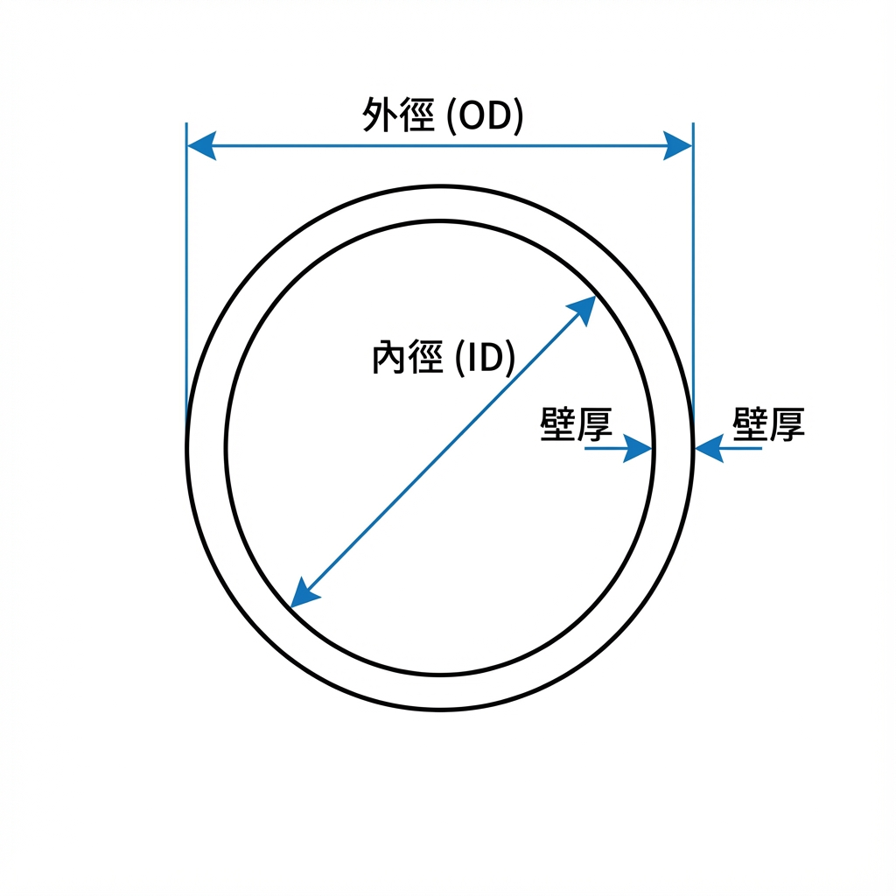
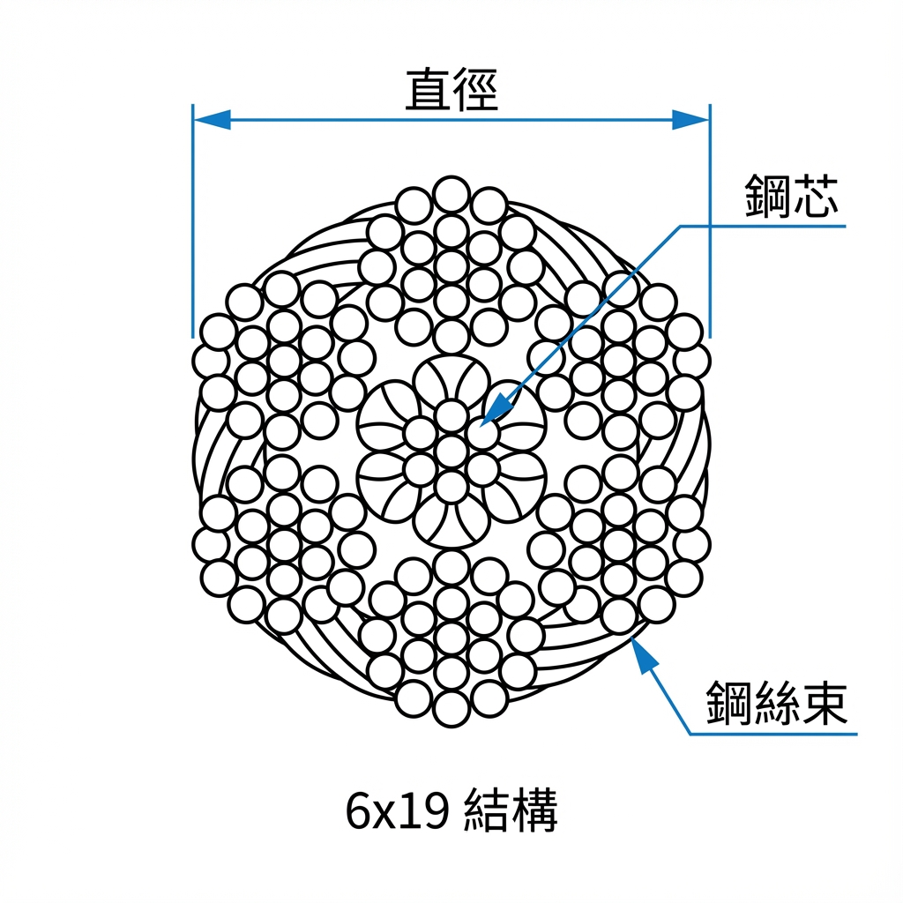
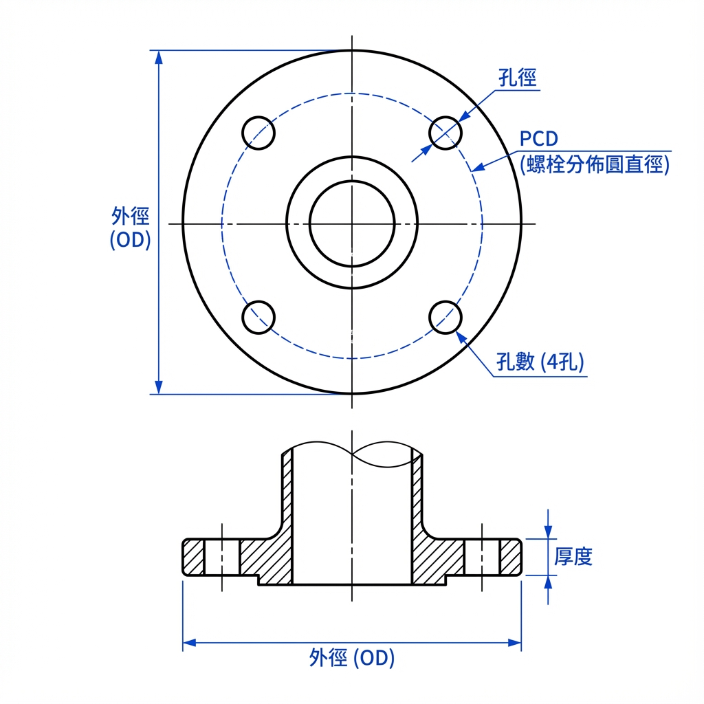
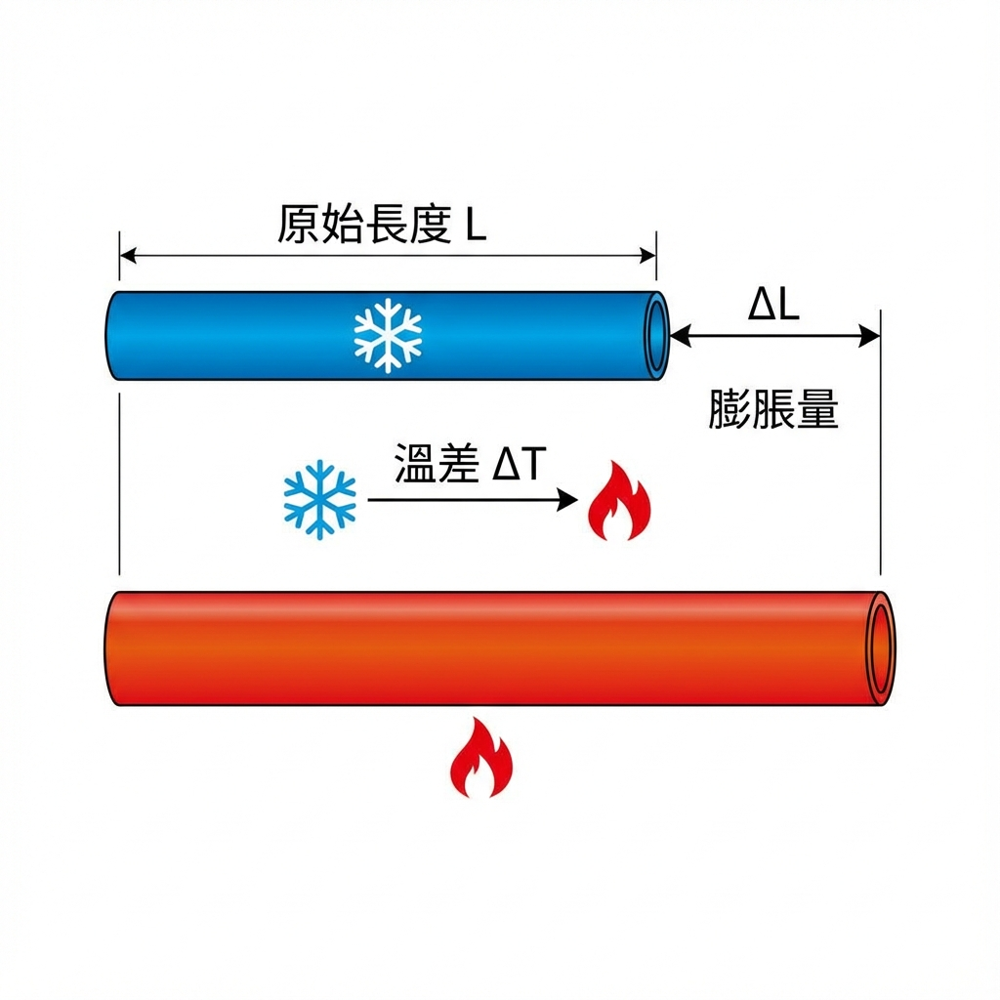
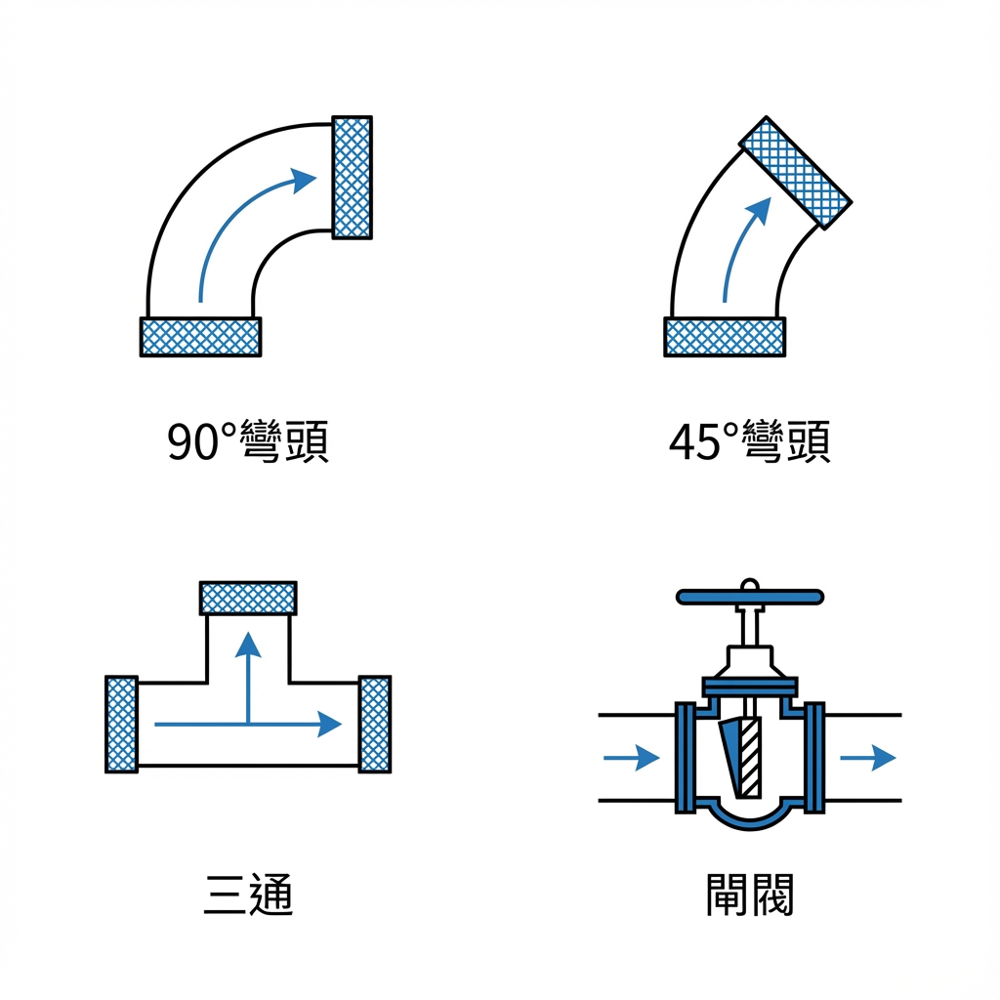

🔩 碳鋼管規格表
ASTM A106/A53 無縫鋼管尺寸規格（單位：mm）

管件截面尺寸示意圖
📖 名詞說明
OD
外徑 (Outer Diameter)
ID
內徑 (Inner Diameter)
SCH
管壁厚度等級 (Schedule)，數字越大越厚
DN
公稱直徑 (Nominal Diameter)
📊 管件尺寸對照表
| 管徑 | DN | 外徑 (OD) | SCH10 壁厚 | SCH10 內徑 | SCH40 壁厚 | SCH40 內徑 | SCH80 壁厚 | SCH80 內徑 |
|---|
🪈 塑膠管規格表
PVC/PP-R 管件尺寸規格（單位：mm）
📖 名詞說明
PVC
聚氯乙烯，常用於給水、排水管路
PP-R
無規共聚聚丙烯，耐熱性佳，常用於熱水管
PN16
耐壓等級 16 bar（約 16 kg/cm²）
PN20
耐壓等級 20 bar（約 20 kg/cm²）
SDR
標準尺寸比 = 外徑 ÷ 壁厚，數字越小管壁越厚
📊 塑膠管尺寸對照表
| 管徑 | 公稱直徑 | 外徑 (OD) | 壁厚 | 內徑 (ID) | 壓力等級 |
|---|
❄️ 冷媒壓力-溫度對照表
常見冷媒在各溫度下的飽和壓力（單位：kg/cm² G）
📖 名詞說明
飽和壓力
液態與氣態冷媒平衡時的壓力
kg/cm² G
錶壓力單位，G 表示相對於大氣壓
PSI
磅/平方英寸，1 kg/cm² ≈ 14.22 PSI
R410A
環保冷媒，用於變頻空調，壓力較高
R32
新型環保冷媒，GWP 值低，效率高
R22
傳統冷媒，已逐漸淘汰
🔎 快速查詢
飽和壓力
-- kg/cm²
📊 R22 壓力對照表
| 溫度 (°C) | 壓力 (kg/cm² G) | PSI (估算) |
|---|
⛓️ 鋼索吊重規格表
6×19 鋼芯鋼索安全吊重（安全係數 6）

6×19 鋼索截面結構圖
📖 名詞說明
6×19
6股鋼絲束，每股19根鋼絲
鋼芯
鋼索中心的鋼絲芯
破斷拉力
鋼索斷裂時的最大拉力
安全吊重
破斷拉力 ÷ 安全係數
安全係數
一般吊掛作業建議 6 倍以上
⚖️ 吊重計算
建議鋼索直徑
-- mm
📊 鋼索規格對照表
| 直徑 (mm) | 破斷拉力 (噸) | 安全吊重 (噸) | 單位重量 (kg/m) |
|---|
🔧 攻牙鑽頭尺寸對照表
公制螺紋攻牙前鑽孔尺寸（單位：mm）
📖 名詞說明
攻牙
在孔內切削出內螺紋的加工方式
螺距
相鄰兩螺紋間的距離（mm）
粗牙
標準螺距，螺距較大，一般用途
細牙
較小螺距，自鎖性強，用於精密場合
M6x1.0
公制螺紋，外徑6mm，螺距1.0mm
🔎 快速查詢
建議鑽頭尺寸
-- mm
📊 攻牙鑽頭對照表
| 螺紋規格 | 螺距 (mm) | 標準鑽頭 | 最小鑽孔 | 最大鑽孔 |
|---|
🔨 螺栓扭力參考表
8.8級六角螺栓標準扭力值（單位：Nm）
📖 名詞說明
8.8級
螺栓強度等級，抗拉強度 800MPa，屈服強度 640MPa
扭力
螺栓鎖緊時施加的扭轉力矩
Nm
牛頓·米，扭力單位，1 Nm ≈ 0.1 kgf·m
乾燥狀態
螺紋未塗潤滑劑的狀態
潤滑狀態
螺紋塗油或潤滑劑，摩擦係數降低
📊 螺栓扭力對照表
| 螺栓規格 | 乾燥狀態扭力 (Nm) | 潤滑狀態扭力 (Nm) |
|---|
⚡ 電線電纜規格表
銅線安全電流與線徑對照（單位：mm²）
📖 名詞說明
AWG
美國線規，數字越小線徑越大
mm²
導體截面積，表示導線粗細
PVC
聚氯乙烯絕緣，耐溫約 70°C
XLPE
交聯聚乙烯絕緣，耐溫約 90°C
安全電流
導線長期可承載的最大電流
電阻 Ω/km
每公里導線的電阻值
📊 電線規格對照表
| 線徑 (mm²) | AWG | PVC安全電流 (A) | XLPE安全電流 (A) | 電阻 (Ω/km) |
|---|
⭕ 法蘭規格表
法蘭尺寸規格（單位：mm）- 用於管道連接的圓盤狀配件

法蘭尺寸示意圖（正面與側面）
📖 名詞說明
法蘭
Flange，管道連接用圓盤配件
PCD
螺栓孔分佈圓直徑 (Pitch Circle Diameter)
孔數
法蘭上螺栓孔的數量
JIS 10K
日本工業標準 10kg/cm² 壓力等級
ANSI 150
美國標準 150 psi 壓力等級
📊 JIS 10K 法蘭對照表
| 管徑 | DN | 外徑 (OD) | PCD | 孔數 | 孔徑 | 厚度 |
|---|
🧊 保溫材料厚度建議
管路保溫建議厚度（單位：mm）
📖 名詞說明
保溫
減少熱量散失或吸收，節能並防止結露
寒氣保溫
冷水管保溫，主要防止結露滔水
保熱保溫
熱水/蒸汽管保溫，減少熱損失
標準厚度
一般場合適用的基本保溫厚度
加厚型
高濕度或高溫差環境用的加強版
📊 冷水管保溫厚度
| 管徑 | DN | 標準厚度 (25mm) | 加厚型 (40mm) |
|---|
🚰 閥門 Cv 值參考
各類閥門流量係數 (Cv)
📖 名詞說明
Cv 值
流量係數，壓差 1 psi 時每分鐘流過的加侖數
球閥
Ball Valve，開關快速，流阻低
蝶閥
Butterfly Valve，適合大口徑，輕量結構
閘閥
Gate Valve，全開/全關型，不適合調節
流阻
流體流過的阻力，Cv越大流阻越小
📊 球閥 Cv 值對照表
| 管徑 | DN | Cv 值 |
|---|
📏 熱膨脹係數
各材質線膨脹係數（×10⁻⁶ /°C）

管路熱膨脹示意圖
📖 名詞說明
膨脹係數
溫度升高1°C時，材料的伸長比例
×10⁻⁶
百萬分之一，例如 11.7 表示每米每度伸長 0.0117mm
膨脹量
= 係數 × 管長 × 溫差
溫差
運轉溫度與安裝溫度的差值
📐 膨脹量計算
膨脹量
-- mm
📊 材質膨脹係數對照表
| 材質 | 膨脹係數 (×10⁻⁶/°C) | 適用溫度範圍 |
|---|
🔀 管件當量長度
管件壓損計算用當量長度（單位：m）

常見管件示意圖
📖 名詞說明
當量長度
管件造成的壓損，換算成等效直管長度
彎頭
Elbow，用於改變管路方向的配件
三通
Tee，T形管路分歧配件
閘閥
Gate Valve，全開/全關型閥門
📊 90°彎頭當量長度
| 管徑 | DN | 當量長度 (m) |
|---|
🔥 焊接規格參考
焊條規格與預熱溫度參考
📖 名詞說明
E7018
E=電弧銲條，70=抱拉強度70ksi，18=藥皮類型
DC+
直流電正極性，銲條接正極
AC
交流電，服用範圍廣
預熱
銲接前加熱母材，防止裂紋
低氫銲條
如 E7018，減少氫入侵，防止氣孔
全位置
可在任何角度/方向銲接
📊 焊條規格對照表
| 焊條型號 | 適用材料 | 焊接位置 | 電流 | 抗拉強度 (MPa) | 用途 |
|---|
🏗️ 起重機/吊車規格
吊車吊重能力與安全距離參考
📖 名詞說明
額定噸數
吊車最小作業半徑時的最大吊重
作業半徑
吊鉤到轉台中心的水平距離
吊臂長度
吊車吊懸臂的最大延伸長度
安全距離
與高壓電線的最小安全間隔
起重能力曲線
不同半徑下的吊重能力變化圖
📊 吊車吊重能力表（噸）
| 額定噸數 | 3m 半徑 | 5m 半徑 | 8m 半徑 | 10m 半徑 | 吊臂長度 (m) |
|---|
📋 SOP 說明書管理
設備說明書、工作守則與操作手冊筆記本
📖 使用說明
分類
將不同類型的說明書分門別類管理
文件
每份 SOP 可包含文字說明與多張圖片
同步
設定 Firebase 後可跨裝置同步資料
📁 分類
分類名稱
文件標題
1 / 1